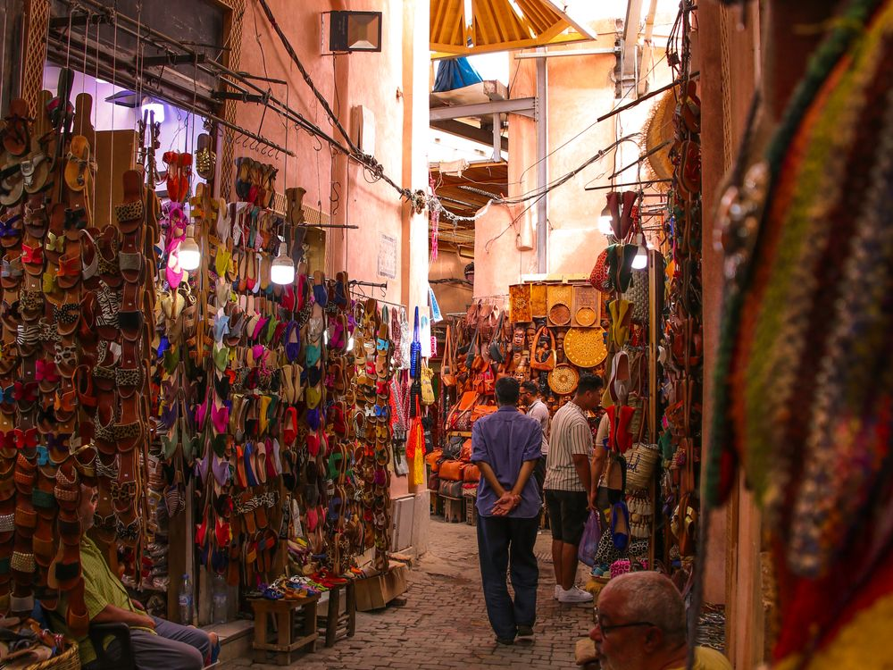
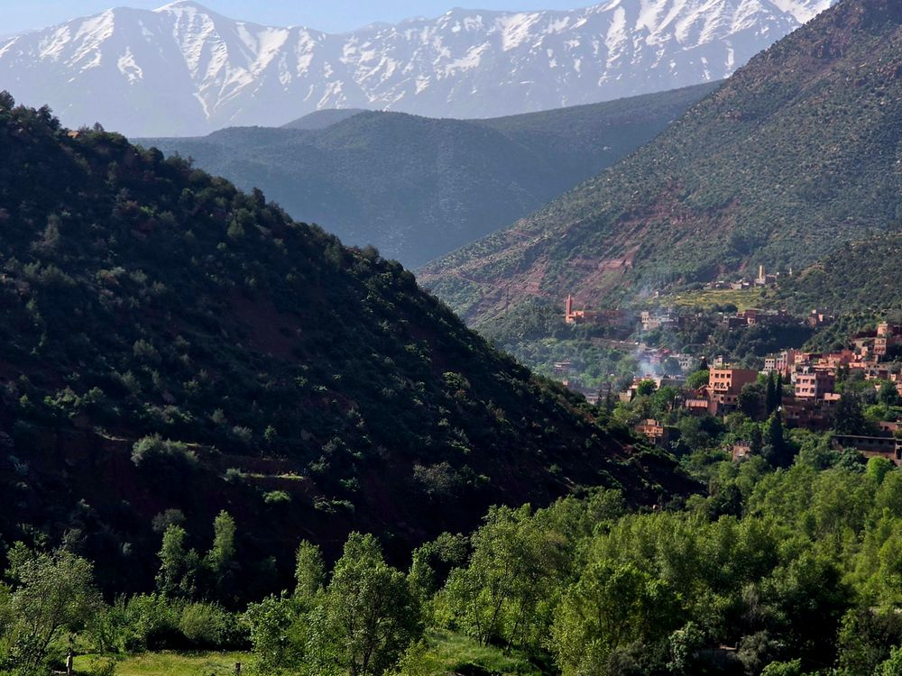

Sahara Nights & Atlas Trails
9 days · 14–22 March 2027 · from £2,150
The idea
Most Sahara trips go to Merzouga, because it's four hours closer. We go to Erg Chigaga instead — further, harder to reach, and consequently almost empty. Three nights under canvas rather than the usual one.
Then back north over the Tizi n'Tichka into the High Atlas, where March means green valleys below and snow still on the tops.


Day by day
-
1
Arrive Marrakech
Transfers to a riad in the medina. Dinner on a roof, and an early night before the long drive.
-
2
Marrakech on foot
The souks and the tanneries in the morning with someone who can actually navigate them, then the afternoon to yourself.
-
3
Over the Tizi n'Tichka
The pass to Aït Benhaddou, an afternoon in the kasbah, and on to Ouarzazate for the night.
-
4
Down the Drâa Valley
Palm groves all the way to M'Hamid, where the tarmac gives up. Into 4x4s and out to the first camp.
-
5
Camel trek to Erg Chigaga
Four hours on a camel — enough to feel it, not enough to regret it — into the big dunes. Camp, food, fire, silence.
-
6
A day in the dunes
Sunrise from the top of the erg, a slow day, and a nomad family for tea in the afternoon.
-
7
North to the Dades
Out of the sand and up through the Valley of a Thousand Kasbahs. Night in the Dades gorge.
-
8
High Atlas — Imlil
West into the mountains and a three-hour walk between Berber villages, finishing at a guesthouse below Toubkal.
-
9
Home
Down to Marrakech in the morning, transfers to the airport.
What's included
In the price
- 8 nights' accommodation, including 3 in desert camps
- All ground transport, 4x4s and airport transfers
- Camel trek into Erg Chigaga
- Local guides in Marrakech and the High Atlas
- Breakfast daily, plus 6 dinners and 4 lunches
- Me, for the whole trip
Not in the price
- International flights to and from Marrakech
- Travel insurance (required)
- Meals not listed above, and drinks
- Hammam and other optional extras
- Optional single room supplement